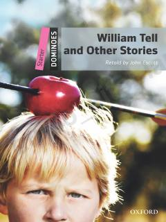

WTIngliz tilini o'rganuvchilar uchun moslashtirilgan qiziqarli hikoyalar to'plami.
Ushbu kitob ingliz tilini o'rganayotganlar uchun maxsus moslashtirilgan qisqa hikoyalar to'plamidir. Unda mashhur afsonaviy qahramon Uilyam Tell va boshqa qiziqarli voqealar sodda tilda bayon etilgan.